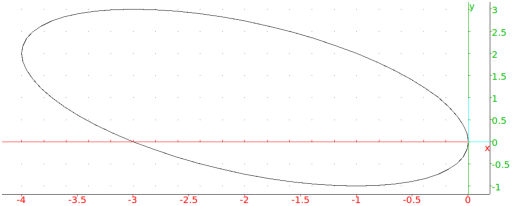

5.54.6 Graph of a conic: conic
The conic command draws a conic.
-
conic takes one mandatory argument and one or two
optional arguments:
-
eq, the equation of a conic.
- Optionally, vars, a list of the variables (by default
[x,y]). The variables can also be given as two separate
arguments.
- conic(eq ⟨,vars⟩)
draws the conic.
Example
Input:
conic(2*x^2+2*x*y+2*y^2+6*x)
Output:
Ellipsis of center (-2,1)

See also the next section for the parametric equation of the conic.